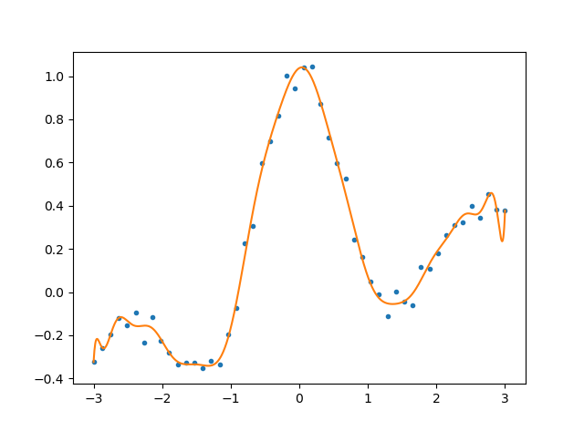

一、原理推导
回归问题（Regression）中
最小二乘学习法（Least Square）是对模型的输出$f\theta(\vec x_i)$和训练集输出${y_i}{i=1}^n$的平方误差
为最小时的参数$\theta$进行学习的方法。
因此也叫$l_2$损失最小化学习。
在求解最小值时，使用求微分令其为$0$的$\theta$值，因此在平方误差公式凑了一个$\frac{1}{2}$，将微分得到的$2$约去。
针对线性模型$f_\theta(\vec x)=\vec\theta^T\phi(\vec x)$，先给出结果：
推导过程：
根据$l_2$-Norm可得：
因此，
利用矩阵乘法，可将求导得到的$\phi_1(\vec x_1)$等提出来：
即得。
通过求解$\Phi^T\Phi\vec\theta-\Phi^T\vec y=0$即可得到通过最小二乘法学习的参数$\vec\theta$，但在大多数情况下，由于数据量远远大于参数数量，因此$\Phi$是一个奇异矩阵，并非方阵，我们不能通过简单的通过他的逆矩阵求出解，因此这里需要引入一个伪逆矩阵的新概念，用来解决此问题。
二、实践
学习了最小二乘法的原理之后，通过python程序来巩固一下。
本程序根据上面对线性模型的推导，基函数使用三角多项式形式，即：
而数据我们使用近似的$sinc(x) = \frac{\sin(\pi x)}{\pi x}$函数加上随机误差来生成得到。
程序如下：
1
2
3
4
5
6
7
8
9
10
11
12
13
14
15
16
17
18
19
20
21
22
23
24
25
26
27
28
29
30
31
32
33
34
35
36
37
38
39
40
41
42
43
44
45
46
47
48
49
50
|
__author__ = 'shiheuan'
import numpy as np
import matplotlib.pyplot as plt
def LeastSquares():
N = 1000
n = 50
x = np.array([np.linspace(-3.,3.,n)])
X = np.array([np.linspace(-3.,3.,N)])
y = np.sin(np.pi*x)/(np.pi*x)+0.1*x+0.05*np.random.randn(1,n)
P = np.ones([31,N])
p = np.ones([31,n])
for i in range(15):
P[2*i+1,:] = np.sin((i+1)/2*X)
P[2*i+2,:] = np.cos((i+1)/2*X)
p[2*i+1,:] = np.sin((i+1)/2*x)
p[2*i+2,:] = np.cos((i+1)/2*x)
print(p)
p = p.T
print(p)
P = P.T
pp = np.linalg.pinv(p)
pp = np.dot(p.T, p)
ppi = np.linalg.pinv(pp)
pp_ = np.dot(ppi, p.T)
t = np.dot(pp_, y.T)
F = np.dot(P, t).T
plt.plot(x[0,:],y[0,:],'.')
plt.plot(X[0,:],F[0,:])
plt.show()
LeastSquares()
|
执行结果：
